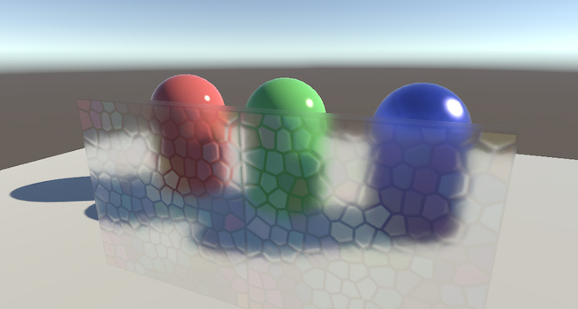
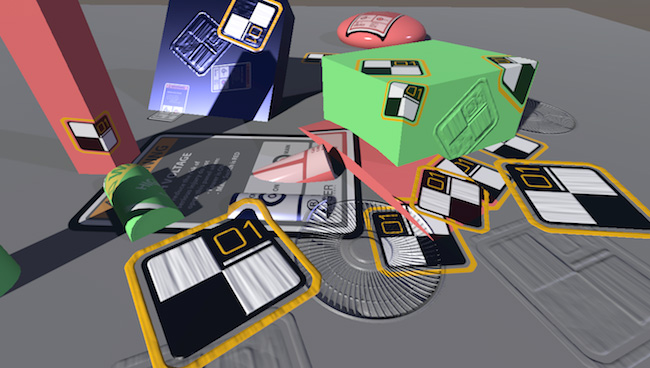

图形命令缓冲区
Command Buffers allow you to extend Unity’s built-in render pipeline. A Command Buffer holds a list of rendering commands which execute at various points during camera rendering. To specify a position in Unity’s built-in render pipeline for a Command Buffer to execute, use the CameraEvent enum.
For example, you can use a Command Buffer with the AfterGBuffer CameraEvent to render additional GameObjects into the Deferred pipeline, after the pipeline processes all opaque GameObjects.
Below is a high-level overview of how Cameras use the Forward or Deferred pipeline to render a Scene in Unity.
- Black boxes represent an internal Unity process.
- Blue boxes represent a CameraEvent where you can add Command Buffers.

See the CommandBuffer Class and the CameraEvent Enum for more information. You can also use Command buffers in conjunction with, or as a replacement for, image effects.
Example code
Here is a sample Unity Project which demonstrates some of the effects you can create with Command Buffers: RenderingCommandBuffers.zip.
Blurry refractions
This Scene demonstrates a technique you can use to create blurry refraction.  After Unity renders opaque objects and the skybox, this technique copies the current image into a temporary render target and blurs it. The glass Shader then samples this blurred image and uses a normal map to offset the UV coordinates to simulate refraction. This technique is similar to a Shader GrabPass.
Custom area lights in the deferred pipeline
This Scene shows a technique you can use to create custom deferred sphere-shaped and tube-shaped lights.
 After Unity processes the regular deferred light pass, this technique draws a sphere for each custom light. Each sphere then uses a Shader to compute the illumination and add it to the lighting buffer.
After Unity processes the regular deferred light pass, this technique draws a sphere for each custom light. Each sphere then uses a Shader to compute the illumination and add it to the lighting buffer.
Decals in the deferred pipeline
This Scene shows a basic technique for processing deferred decals.

After Unity processes the G-buffer, this technique draws each decal and modifies the G-buffer contents. This technique works in a similar way to how Unity processes lights in the deferred pipeline, except this technique modifies the G-buffer textures rather than accumulate lighting.
 This technique processes each decal as a box, and only affects geometry inside the volume of the box.
This technique processes each decal as a box, and only affects geometry inside the volume of the box.